Die Innenstadt an einem Märznachmittag 1932, zu Fuß oder mit der Elektrischen: vom Hauptbahnhof über Westerntor und Westernstraße zu Marienplatz, Rathaus, Dom und Liboriberg.
SPIELENLinks ziehen: gehen · rechts ziehen: umsehen · oben rechts: Standort wechseln · unten rechts: Ansicht wechseln, an der Bahn einsteigen. Die Darstellung passt sich selbst an das Gerät an.